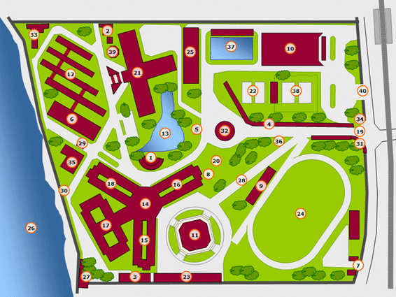
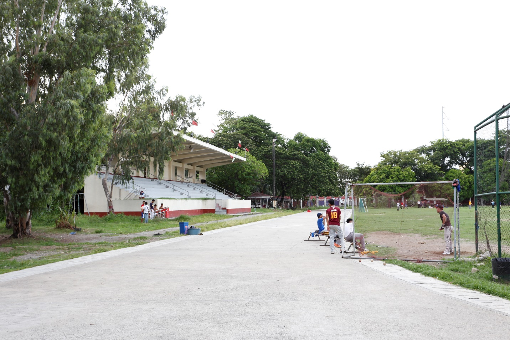
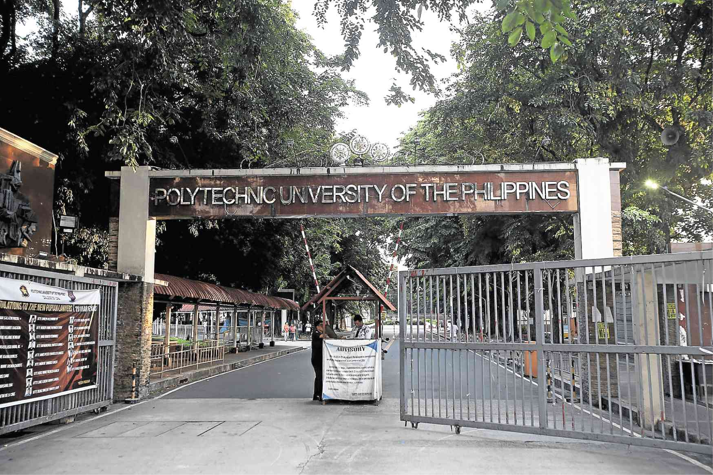

PUP Map!
Hover around the map to view PUP's Main Attractions!
PUP Gymnasium and Sport Center
The PUP Gymnasium and Sport Center is a large, multi-purpose facility that is used for a variety of activities, including sports, concerts, and conventions.

PUP Oval
The PUP Oval is a large, open field located in the heart of the PUP campus. It is a popular spot for students to relax, play sports, or just hang out.
PUP Interfaith Chapel
The PUP Interfaith Chapel is a place of worship for students of all faiths. It is a quiet and peaceful space where students can come to pray, meditate, or simply relax.

PUP Swimming Pool
The PUP Swimming Pool is a state-of-the-art facility that is open to students, faculty, and staff. It is a great place to cool off on a hot day or to get in a workout.

PUP Pylon
The PUP Pylon is a towering structure that stands at the entrance to the PUP campus. It is a symbol of the university's pride and tradition.

PUP Guard House
The PUP Guard House is the first building that visitors see when they enter the PUP campus. It is staffed by security guards who are responsible for the safety of the campus community.
PUP Mabini Monument
The PUP Mabini Monument is a towering obelisk that stands in the center of the PUP campus. It is dedicated to Apolinario Mabini, a Filipino revolutionary leader and statesman.